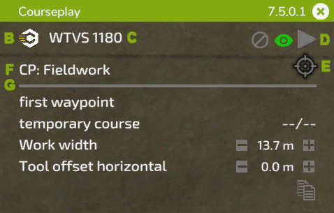
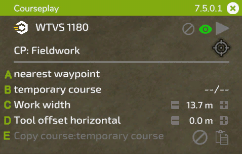
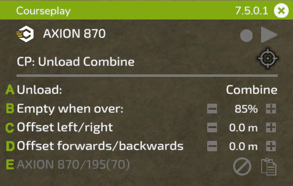
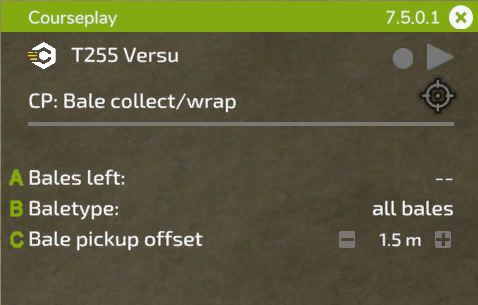
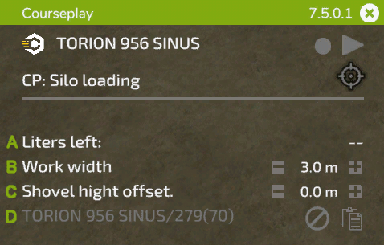
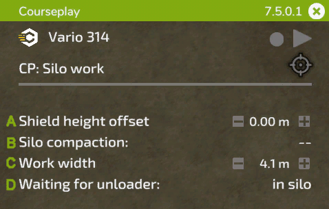

Mini HUD
Informacje ogólne

A: Przytrzymaj lewy przycisk myszy na nagłówku, aby przeciągnąć HUD do wybranej pozycji. Po prawej stronie wyświetlana jest zainstalowana wersja, kliknięcie myszą na X zamknie HUD.
B: Kliknij ikonę Courseplay, aby uzyskać dostęp do ustawień globalnych.
C: W tym miejscu wyświetlana jest nazwa pojazdu. Kliknięcie jej spowoduje przejście do menu ustawień pojazdu.
D: Symbole te służą do: (1) usunięcia aktualnie załadowanego kursu, (2a) przełączenia sposobu wyświetlania kursu, (2b) jeśli żaden kurs nie jest załadowany, wyświetlany jest przycisk nagrywania, aby nagrać kurs z granicą pola, (3) uruchomienia lub zatrzymania Pomocnika SI.
E: Ta ikona celu ma różne opcje w zależności od wybranego trybu, otwiera menu AI z pracą i umożliwia umieszczenie znacznika i dodatkowych ustawień dla pracy. Po lewej stronie ikony, gdy trwa praca w terenie, wyświetlany jest pozostały czas kursu.
F: Kliknij tekst, aby przełączyć dostępne tryby dla bieżących narzędzi.
G: Ustawienia wyświetlane w tym wierszu zależą od bieżącej pracy. Zostaną one wyjaśnione na poniższych ilustracjach.
Prace polowe

A: Kliknij, aby wybrać miejsce rozpoczęcia pracy. Jeśli załadowany jest kurs z wieloma narzędziami, po prawej stronie można wybrać pas ruchu.
B: Wyświetla nazwę załadowanego kursu. Jeśli kurs został właśnie wygenerowany, wyświetlany jest komunikat 'kurs tymczasowy'. Po prawej stronie wyświetlane są bieżące/łączne punkty trasy po rozpoczęciu zadania.
C: Kliknięcie tekstu spowoduje ponowne obliczenie szerokości roboczej lub można ją ustawić ręcznie po prawej stronie, klikając +/- lub za pomocą kółka myszy nad liczbą.
D: Niektóre narzędzia wymagają przesunięcia w bok. Courseplay obliczy je automatycznie po kliknięciu tekstu lub można je zmienić ręcznie, podobnie jak szerokość roboczą.
E: Użyj symbolu po prawej stronie, aby skopiować bieżący kurs do schowka. Nazwa skopiowanego kursu zostanie wyświetlona po lewej stronie. Skopiowany kurs można załadować do innego pojazdu, który nie ma jeszcze kursu. Aby usunąć kurs ze schowka, kliknij symbol usuwania.
Rozładunek kombajnu

A: Wybierz typ pojazdu, który Pomocnik SI ma rozładować. Jest to przydatne, jeśli na tym samym polu pracują różne typy pojazdów, np. kombajn i oczyszczarka (jak ROPA Maus).
B: Ustaw poziom napełnienia (40% - 100%), z jakim Pomocnik SI powinien dojechać do miejsca rozładunku. Kliknij przycisk +/- lub użyj kółka przewijania nad liczbą, aby ją zmienić.
C: Czasami pozycja rozładunku pod rurą nie jest idealna. Może to być spowodowane przez przyczepę lub rurę kombajnu, a czasem przez nachylenie pola. W tym miejscu można ręcznie skorygować odległość od kombajnu.
D: To samo, co powyżej, ale tutaj można dostosować położenie rozładunku w przód/tył względem rury.
E: Podobnie jak w przypadku kopiowania kursu, w tym miejscu można skopiować pozycje znaczników do innego pojazdu.
Zbieranie/Owijanie bel

A: Pozostałe bele na polu.
B: Typ beli do zebrania/owinięcia.
C: Przesunięcie między linią środkową ciągnika a linią środkową ramienia załadunkowego. Może być konieczne dostosowanie tej wartości w przypadku większych ciągników (np. z szerszymi oponami).
Załadunek pryzmy

A: Pozostała wielkość pryzmy w litrach.
B: Szerokość robocza, taka sama jak w przypadku prac polowych.
C: Courseplay wymaga prawidłowego ustawienia dokładnej wysokości łyżki nad ziemią. Ponieważ wysokość ta może być różna dla każdego narzędzia, można ją sprawdzić i dostosować za pomocą tego ustawienia.
D: Podobnie jak w przypadku rozładunku, można skopiować pozycje znaczników do innego pojazdu.
Zagęszczanie i wyrównywanie

A: Podobnie jak w przypadku załadunku pryzmy, wysokość lemiesza ma kluczowe znaczenie. Można ją wyregulować tutaj.
B: Pokazuje postęp zagęszczania. Kliknięcie na niego przełącza opcję zatrzymania kierowcy po osiągnięciu pełnego zagęszczenia.
C: W tym miejscu można w razie potrzeby zmienić szerokość roboczą.
D: To ustawienie nakazuje Pomocnikowi SI czekać w silosie lub w wybranej pozycji parkingowej, gdy do silosu zbliża się kierowca.